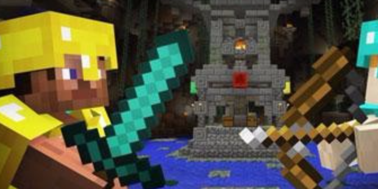

PVP
《我的世界》可以进行多人游戏，也有许多mod，这极大丰富了玩家的游戏体验,更有各种各样的皮肤。



在mc我的世界中，我们可以选择各种模式和玩法，为了满足大家的探索心理,
游戏中还经常会新增很多有趣的组件，下载起来十分方便，还能给我们带来很多乐趣，
因此受到了大家的一致好评。虽然组件的类型有很多，但是大家经常玩的却只有那几种，
PVP模式就是我们经常会选择的一种游戏模式，举个例子来说，组件“刺激的对战”就是一个十分优秀的PVP手游组件。
从名字就可以看得出，这款组件的玩法会很刺激，既然是一个刺激的游戏，玩法也一定会很有趣了。
因为与我们对战的另一方都是真人，所以就需要玩家具有更多的勇气和智慧，至少要超过对面的人，不然怎么能够取得胜利呢？
该组件中，玩法还是比较简单的，而且没有复杂的规则，就是为了让大家能够有一个更加完美的体验。
组件中一共有三个不同的对战场地，每个场地都有一块铺有铁块的地面，
这块地面是很神奇的哦！我们可以站在铁块上获得银币，这些银币可以在后续的战斗中为我们提供帮助，
因为之后的战斗中如果想要购买带特效的武器，就需要用到这些银币了。但是由于还有敌人的存在，
我们就算是获取银币也不能十分轻松，毕竟对方还会来骚扰我们，而我们也可以派出队友专门去他们那里进行捣乱。
不过，这里的对战还是很简单的，我们不需要拼什么智慧，当然了，如果和队友有一定的计谋也是很好的。
我们需要比拼的就是使用武器的方式，还有勇气。毕竟面对着前来杀敌的来势汹汹的敌人，
大家心中未免有些害怕。还有就是，我们和对方使用的武器虽然类似，
但是如果使用的方法和技巧不同，就会有很多差异，也许赢得过对方的关键点，就在于这里了！
在PVP中，玩家们经常会使用的、觉得好用的武器是什么呢？不少冒险家会觉得，TNT实在是很好用，
因为一旦获得了这个杀伤力很强大的武器，就会炸掉整个敌人窝点，而且会吓到对方。
而其次好用的武器，大概就是弓了，因为在我们无法预知敌人会从哪里出现的时候，
偷偷躲在一个地方监视的时候，远程武器当然是最好用的了
事实上，虽然说了很多关于作战的技巧，可是对方的人也一定会查询过有关PVP的攻略，
因此，我的世界对战模式对于新老玩家来说应该都不简单，快带上合适的武器，去对战吧！